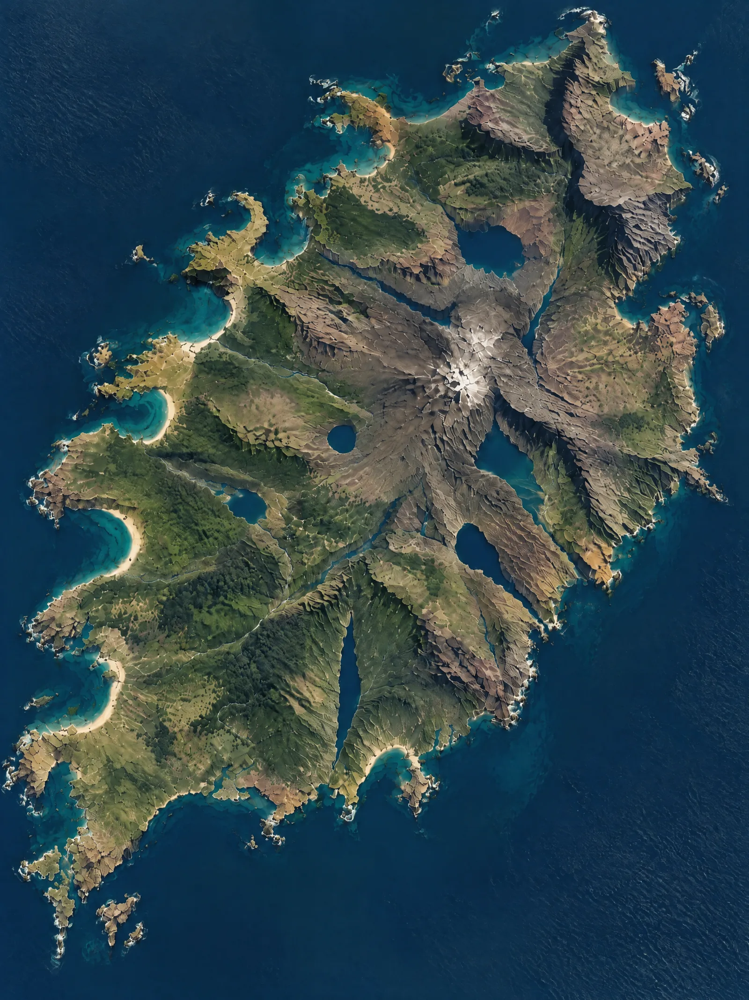
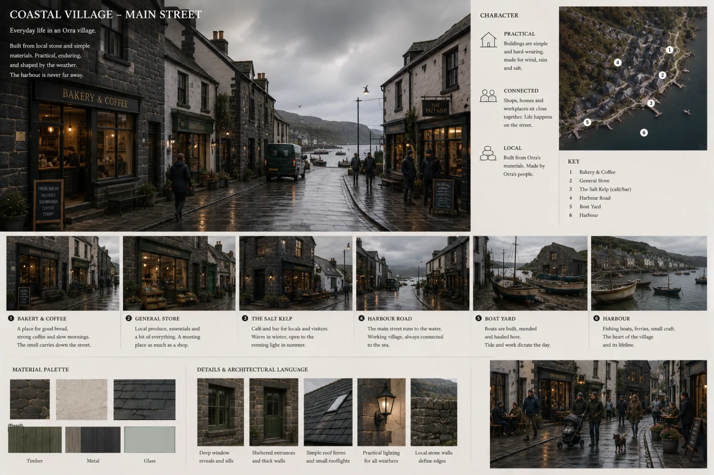

Place record 01 · Maritime west
Orra
A modern island society shaped by basalt, weather, sea and a living world that repeatedly crosses boundaries.
Orra occupies a compact volcanic island and its surrounding archipelago: high dark escarpments, deep coastal fissures, cold productive water, sheltered lake country and settlements built wherever the land permits.
It is remote without being disconnected, traditional without being static—a contemporary society whose roads, homes and working harbours occupy narrow lines through a landscape that remains overwhelmingly larger than them.

Land & water
The edge of things
Much of Orra’s coastline ends in basalt walls three to seven hundred metres high. Fissures cut inland from the sea; waterfalls fall directly from the plateau; wind bends trees and keeps exposed vegetation close to the ground.
Orrans understand habitation as small made places within a much larger wild landscape. Villages end abruptly into farmland, tracks vanish into moor and rivers pass between houses before falling into the ocean.
Settlement & architecture
Learning where to stand
Buildings do not conquer Orra’s weather. They learn where to stand within it. Traditional houses are low, thick-walled and basalt-built, defensive toward prevailing storms but often opening dramatically on a sheltered side.
Settlements accumulate layers rather than remaining frozen: old foundations, rebuilt walls, modern glazing and contemporary extensions. Orra is not an architectural museum, but its best new buildings retain the environmental intelligence of the old.

Culture
Isolation without disconnection
Orra has no conventional large city. Its population is concentrated in harbour settlements, cliff-top communities and sheltered agricultural valleys. Social life is warm, communal and sometimes claustrophobic—the legacy of generations for whom surviving storms and maintaining paths required cooperation.
Young Orrans commonly leave for education or work. Some stay abroad; others return. That pull between leaving and coming home is one of modern Orra’s defining cultural tensions.
Food & craft
Sea, pasture, smoke
Silverfin, shellfish, smoke, fermentation and winter preservation shape the table. Abroad, Orra is known for a slowly matured grain spirit; at home, naturally moulted Glasswing feathers are worked into subtle luminous decoration.
Movement
Settlements are connected. Wilderness is not.
Modern roads and tunnels link the main communities, then thin rapidly into single-track roads and paths. Ferries remain structurally useful: fifteen minutes by boat can replace ninety minutes by road. Some vessels travel deep into flooded fissures beneath immense basalt walls.
A maintained Coastal Path runs roughly three hundred to three hundred and fifty kilometres around the plateau. Beyond it, large parts of the island remain accessible only on foot.
Regional field index